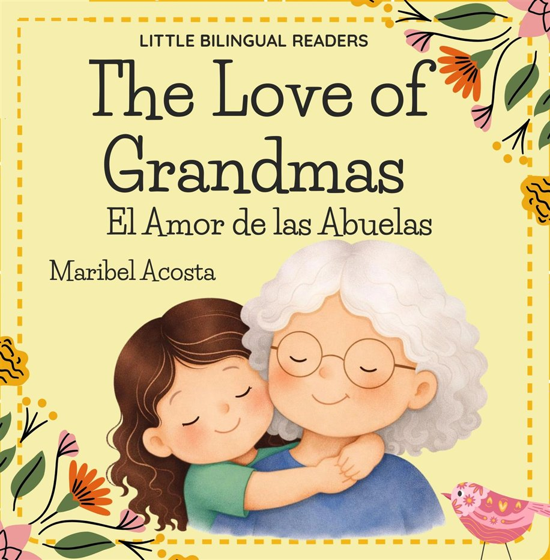
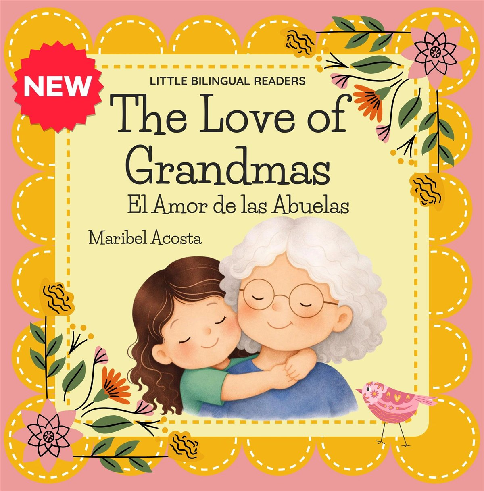
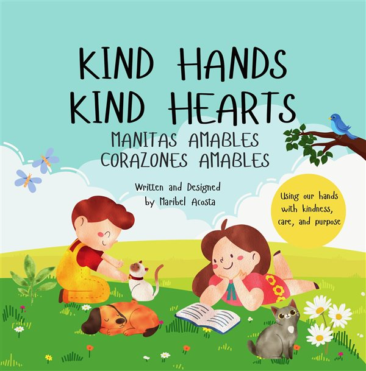
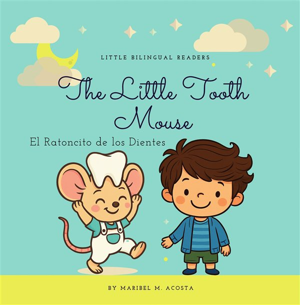

The Love of GrandmasEl Amor de las Abuelas
BILINGUAL PICTURE BOOKS BY MARIBEL ACOSTA
Inspiring a love of reading in English and Spanish.
¡Que viva la lectura!
THE NEWEST BOOK
The Love of GrandmasEl Amor de las Abuelas
Little Lisa misses her grandma, but through her journey she discovers a world full of wonderful surprises and joyful adventures. She learns that even when we miss someone we love, the care and kindness of those around us can bring happiness.
La pequeña Lisa extraña a su abuela, pero a lo largo de su camino descubre un mundo lleno de sorpresas maravillosas y aventuras alegres.
A bilingual English and Spanish story, with fun activities to share with Grandma.
Seven books, two languagesSiete libros, dos idiomas
Stories for parents and teachers to share with young learners, each one in English and Spanish.
- The Love of GrandmasCare and love
- Kind Hands Kind HeartsKindness and fun inside
- The Little Tooth MouseA tooth adventure
- Learning my ShapesIt's shape time
- The Sunflower and the SunA sunshine story
- The Insect's CastleBuzz into the book
- Alfabeto y Aliteraciones¡Aprende y juega con palabras!


Bring the little ones¡Traigan a los pequeños!
A day of books, stories and family fun at the Tex-Indie Author Book Fair in Houston.
Tex-Indie Author Book Fair
Just Play Sports, 10510 Westview Drive
10am to 5pm
About Maribel
Maribel Acosta is a local author from Houston, Texas. She has taught in bilingual and dual language classrooms and worked as a Reading Interventionist, mostly supporting English Language Learners and early literacy.
Her books grow out of those years with her students and community, and from her own children. She believes deeply in the power of early exposure to reading.
Maribel Acosta es una autora local de Houston, Texas, y maestra bilingüe.
Happy reading¡Que viva la lectura!
Every title, in English and Spanish, is in the store.
Visit our store